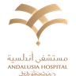
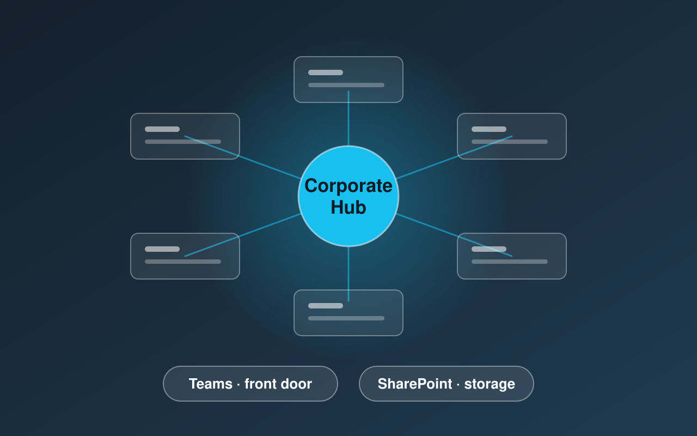
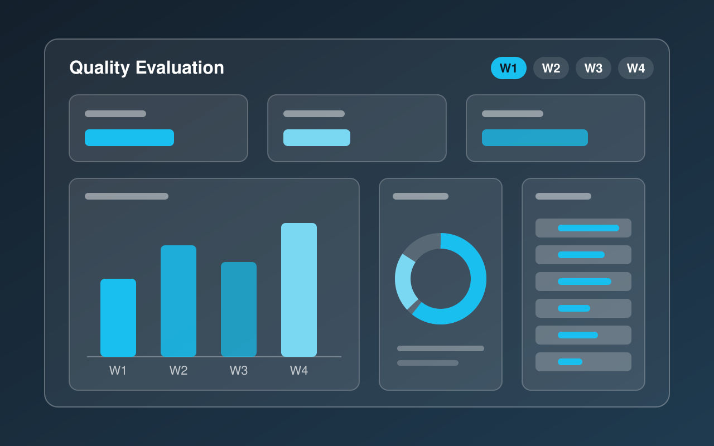
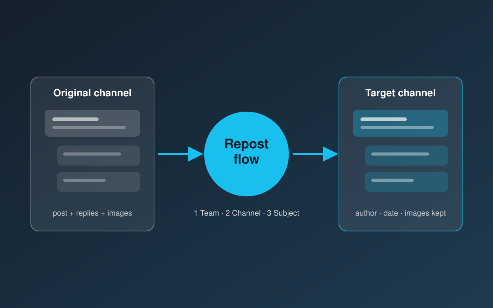
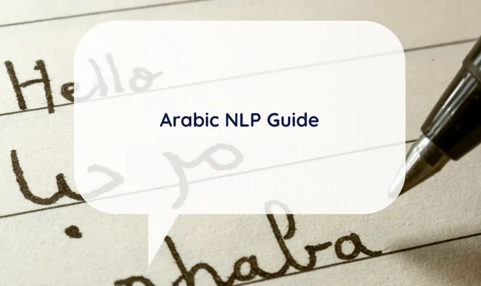
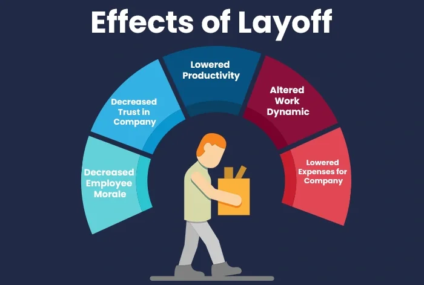

Data Solution Engineer in the Enterprise Architecture team at Andalusia Health Egypt, with a BSc in Data Science from Alexandria University. I review data models against business requirements and build internal solutions with Power Apps, Power Automate, Dataverse and SharePoint. I am now building on that foundation with Python, FastAPI and LLM-based systems (RAG and agents) to bring AI into real business processes.
Contact Information
- Al Ibrahimiyyah, Alexandria, Egypt
- 01060134890
- abdelrahmanalgamil@gmail.com
Education
Alexandria University – Faculty of Computing and Data Science
BSc in Data Science | 2019 – 2024 (graduated June 2024)
Grade: Good
Relevant Coursework: Machine Learning, Data Mining, Probability & Statistics, Advanced Calculus, Linear Algebra
Experience

Full Time – Data Solution Engineer, Andalusia Health Egypt
October 2025 – Present · Enterprise Architecture team
- Review ERDs from other teams against Business Requirements Documents (BRDs) to confirm they match and to flag gaps.
- Build internal solutions with SharePoint, Power Apps, and Power Automate.
- Develop browser-run scripts that automate data upload and migration on SharePoint.
- Build Power BI KPI dashboards and keep data compliant through SharePoint metadata and sensitivity labels.
Certifications
Company-wide SharePoint & Microsoft 365 Restructuring

Redesigned the company's SharePoint and Microsoft 365 environment into one unified structure: Teams as the front door, SharePoint as the storage layer, and a central hub linking every department. Added clear rules for naming, access, and archiving. Built with browser-run scripts that automate page setup, data upload, and migration, and rolled out successfully across the whole company.
Internal project · details are confidential
Call Center Quality Evaluation Dashboard

Power BI dashboard that tracks call center agent performance weekly and monthly, so managers and team leaders can see strengths and recurring errors at a glance. Built on a Dataverse data model with a calendar table and Power Query bridge tables, plus DAX measures that turn coded evaluation options into readable KPIs. Designed the data model first, then the dashboard, in two months.
Internal project · details are confidential
Teams Repost Flow – Power Automate

Power Automate flow that moves a Microsoft Teams conversation to another team and channel, keeping the replies, inline images, authors and dates. Users run it from a message's menu and choose the destination through Adaptive Cards; the flow then copies the post and its replies with Microsoft Graph calls and leaves a link in the original thread.
Heart Disease Prediction website
End-to-End ML Application using Python and Streamlit. Deployed a bilingual (Arabic/English) heart disease prediction system using real UCI data, applying a full ML pipeline and delivering an interactive UI with visualizations.
Learnova – Complaint Management System

Graduation project. Led a team of 10 to build a complaint classification system for university students, using NLP techniques and libraries such as AraBERT, CAMeL, and Farasa on 500+ Arabic-language complaints.
Gomla Market Dashboard - Power BI Report
A professional Power BI dashboard analyzing sales and inventory data for a wholesale market. The report presents insights into top-selling products, deadstock items, product speed categories, gross profit, and inventory turnover, helping stakeholders make data-driven decisions.
Python scraper using BeautifulSoup to collect football match data from Yallakora, handling Arabic headers and exporting results to CSV.

Comprehensive SQL-based analysis of global workforce reductions with trend analysis and corporate layoff rankings.
COVID-19 Data Exploration
Exploratory data analysis and visualization of global trends using SQL and visualization tools like Tableau.
House price LabelEncoder Project
Solution for handling missing values in House Prices dataset using advanced regression techniques.
Currently Learning
A structured Applied AI track alongside my day job: strong software foundations first, then RAG and agents, then production. I document the journey publicly on GitHub.
Focus now
- LLM APIs & structured outputs
- Retrieval-Augmented Generation (RAG)
- Agentic AI & tool calling
- LangChain
Engineering foundations
- Python (beyond notebooks)
- FastAPI & REST APIs
- PostgreSQL
- Git, GitHub & Linux
Next up
- LangGraph & OpenAI Agents SDK
- Evaluation & observability for LLM apps
- Docker & deployment
- Azure OpenAI & Azure AI Search